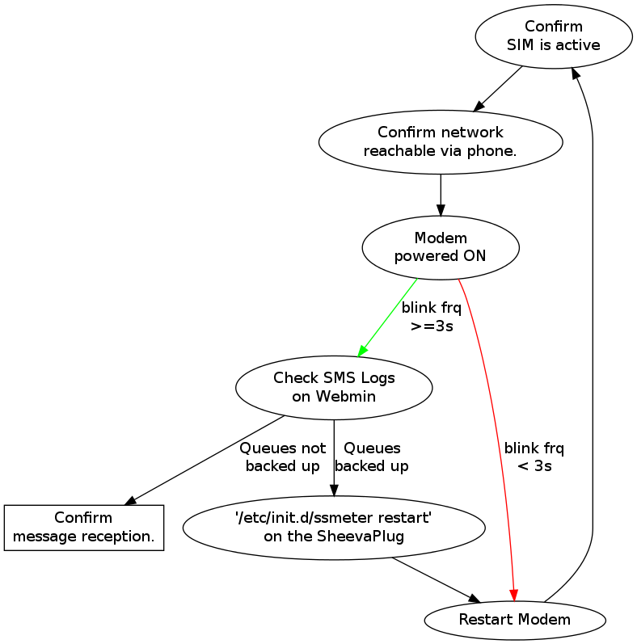

Described below are some common cases encountered at the meter.
Send a text message from a phone to the meter and check the SMS Logs page on the webmin to see if it arrives. Give it 5 minutes.
In case it does arrive, then double-check that the Gateway indeed sent out the message. If the message was sent, then check the aggregator/telco logs to see where it is in the chain.
Send a text message from your phone directly to the meter, with the content of the SMS being hello meter. If the meter/modem is functioning, then you should receive a response SMS containing hello <your_phone_number>.
The point of failure might lie either with the localsms solution or the kannel server.
From the Webmin’s Meter Configuration webpage, change the Gateway’s phone number to your personal cellphone.
If both the above tests pass, contact sharedsolar-tech@googlegroups.com and ask to check the localsms and kannel solutions.
Thanks to MichaelBenedict for the question and MattBasinger for the response.
The first thing is to verify there is indeed absolutely no load and that this is for sure a software issue:
Monitor the “power” from the webmin with the household circuit activated (CB at the house) and the lights on and any other applicable load on? What is this load at the SC20 via the webmin?
When you turn off the breaker at the household - what is the residual load you are trying to identify? (how many watts)
Or if you can’t access the “power” (watts) via the current version of the webmin you have - then just watch the watthours decrease over a several minute period, time it, and calculate the power.
Also, use the current clamp (orange) multimeter that ivan brought you... with the household breaker turned off, put the multimeter clamp around the hot wire in the enclosure at the output terminal blocks - what is the AC current measurement?
Also, see if you disconnect the actual transmission line from the meter’s output terminal blocks - does the residual load go away? Or does the SC20 continue to measure a load even when you’ve physically disconnected the wires at the output terminal blocks for this circuit? (always turn off circuit breakers in shed before handling terminal blocks.)
If you’ve check all these different hardware options and verified that there is no real hardware load but it is definitely a software issue... another option is the SC20 is bad.
Replace the SC20 with one of the spares, and test everything again. This happened in Pelengana too - I found one SC20 that was measuring a watt or two with no load - I replaced the SC20 and with the new SC20 there was no mystery load.
On your computer, run rm ~/.ssh/known_hosts
First connect your computer to the plug-pc using ssh. There are two steps to update the SheevaPlug’s system time.
Set the operating system clock to the correct date/time using the date command (and don’t forget the double-quotes around the date values).
sudo date -s "2011-08-23 16:00:00"
will set the date and time to: Tue Aug 23 16:00:00 EDT 2011
Set the hardware clock using the hwclock command.
sudo hwclock --systohc
The hardware clock keeps the time when power is turned off, so be sure to do this for those cases. This is supposed to be run at shutdown automatically, but because we encounter sudden power outages so often, the system time will not sync with the hardware clock, resulting in wrong date/times on reboots.
Could be at least two reasons why you cannot connect from your computer.
Your computer is not on the same subnet as the SheevaPlug. You might have been using your computer to surf the web before getting to the Plug. Setup your network with similar settings as the ones below:
IP Address: 192.168.1.XYZ, where XYZ is a number in the range 150-180 Netmask: 255.255.255.0 Broadcast: 192.168.1.255
Depending on the system you use, you may only need to set the IP Address.
Check the ethernet interface on the SheevaPlug using the command:
/sbin/ifconfig
There should be an entry for ‘eth0’, and the inet address must be a static one - 192.168.1.101
If you do not see an entry for ‘eth0’, then make sure the file /etc/network/interfaces has the lines:
allow-hotplug eth0
auto eth0
iface ssmeter inet static
address 192.168.1.101
netmask 255.255.255.0
broadcast 192.168.1.255
If you had to edit the /etc/network/interfaces, reboot the computer to test/ensure the changes take effect on startups [sudo reboot].
There will be times when the communications link needs to be checked at the site/meter - this will involve checking the modem and software status. The diagram below can serve as a flowchart the field technician can use as a guideline to solving the issue.
Note
Current versions of ssmeter include a ‘Clear SMS’ button for both the Critical and Non-critical queues. This will most likely be removed from future versions that would use values stored in a database to drive it.
Note
Future ssmeter versions will also include support for a hardware component that powers ON the modem programmatically.